Further configuration of the camera can be done using the Features pane described below.
There is a main menu at the top of the SpinView window.
| Menu | Function |
| File-->Exit | Closes the SpinView application |
| View-->Dynamic Dialogs | Opens dialogs in the Features pane, grouped by function. These are also accessible via tabs at the bottom of the Features pane. |
| View-->Rendering Methods | Switch between CPU and GPU rendering methods |
| View-->Reset View to Default | Restore window layout to the default view |
| View-->Resest Application Settings | Reset and load default settings at next launch |
| Help-->Documentation | Links to local copies of Spinnaker documents |
| Help-->Contact Support | Open a support ticket |
| Help-->Give Feedback | Send feedback to the Spinnaker development team |
| Help-->About | Opens the About SpinView dialog |
There are also context menus accessible via right-click available in the Devices pane, Features pane, and Display pane.
Toolbar buttons are available for many functions.
| Button | Toolbar | Function |
| Devices Pane | Refresh the devices list | |
| Devices Pane | Display all adaptors in the Devices pane | |
| Devices Pane Display Pane |
Start acquisition | |
| Devices Pane Display Pane |
Stop acquisition | |
| Devices Pane | Disconnect the camera | |
| Devices Pane | Configure device IP address. Only applicable to GigE cameras. | |
| Devices Pane | Switch Device Driver. Opens the Driver Configuration window. | |
| Devices Pane | Update device firmware. Opens the Firmware Update window. | |
| 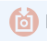 | Devices Pane | Save camera settings profile. Save the current settings to User Set 1 and make it the default configuration. |
| Devices Pane | Copy camera properties to clipboard | |
| Devices Pane | Show camera properties. Opens the Properties window. | |
| Display Pane | Single image acquisition | |
| 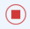 | Display Pane | Stop streaming |
| Display Pane | Save image to disk | |
| Display Pane | Zoom in / Zoom out / Loupe From the context menu select Configure Loupe to set the Loupe size |
|
| Display Pane | Display histogram. Opens the Histogram window. Start streaming before opening histogram. | |
| Display Pane | Optimize Frame Rate Accessible when streaming is off. This may overwrite existing settings to achieve the fastest frame rate. A confirmation dialog lists all the changes. They are also noted in the Log. |
|
| Display Pane | Open Recording window | |
| Features Pane | Sort features by XML sequence | |
| Features Pane | Sort features by category | |
| Features Pane | Sort features alphabetically | |
| Features Pane | Expand/collapse all nodes |
The SpinView main window is divided into separate panes. You can resize, float, or dock these panes.
The Devices pane shows adaptors with cameras currently connected to them or all adaptors. Select a camera to load its features.
To toggle between views, click
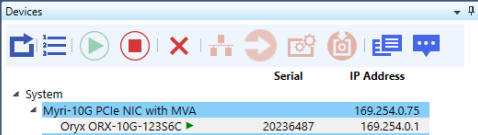
Devices Pane - Cameras Connected
To refresh the devices list click
The features pane displays the features of the selected camera and provides access to managing the camera parameters.
|
By default, the features pane displays the Settings tab. Groups of features can also be accessed through tabs at the bottom of the features pane. The tabs available are dependent on the selected camera. |
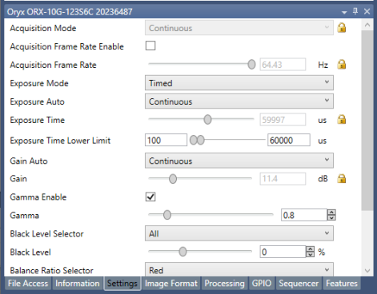
Settings Tab |
|
These features are grouped by:
|
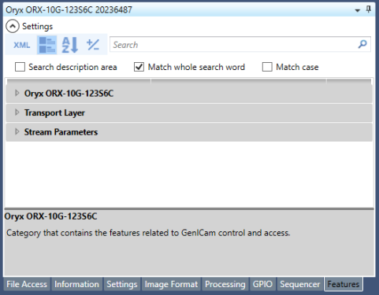 Features Tab |
|
Features can be sorted in three ways:
|
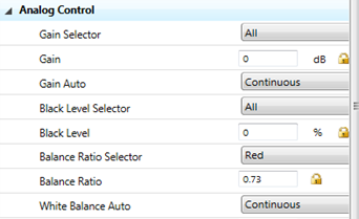
Features Sorted by XML |
Features marked with a lock symbol are read only. Some features may be locked and unlocked based on the settings of other features. Some features are always read only.
In the Features pane you can search for a feature. The search is executed as soon as you begin typing. Found items are highlighted. Related items are also shown in the search results.
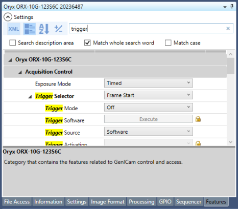
Search Execution
Selecting a feature displays a description. Hovering over a text box displays a tooltip with the feature's valid range.
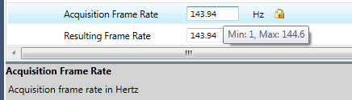
Feature Tooltips and Descriptions
Right-click in the Features pane to access a context menu.
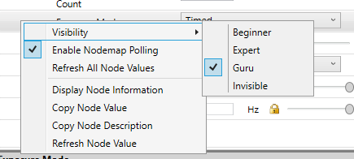
Features Context Menu
From the context menu you can change your visibility of the features. By default, SpinView displays everything (Guru) but this can be limited by selecting Expert or Beginner.
From the context menu, select Display Node Information to see an information pane about the feature. This information can be copied to the clipboard.
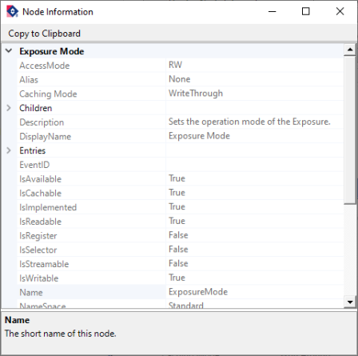
Feature Node Information
Panes and columns within panes can be resized.
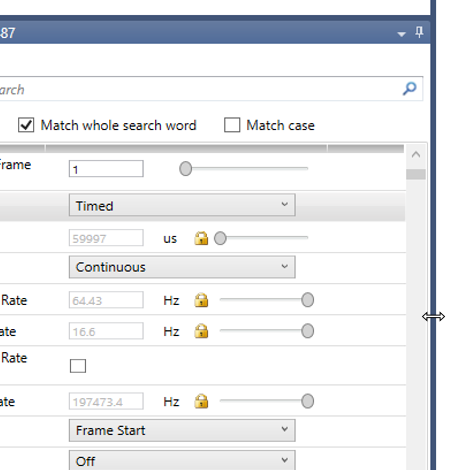
Resize Panes or Columns
Panes can also be undocked by dragging by the title bar.
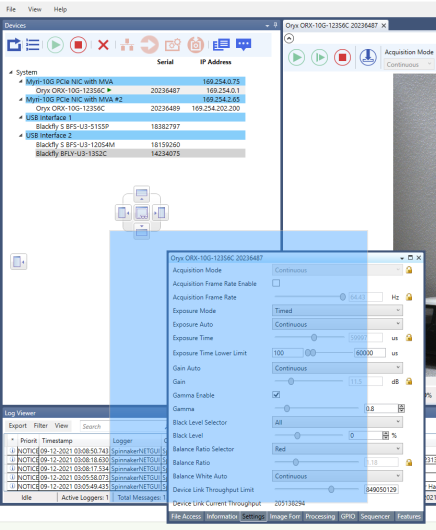
The display pane shows the image being captured as well as information about the image settings.
To start image acquisition, double-click the camera or click
Right click on the image to access a context menu from which you can save or rotate the image, stretch to fit, draw and configure cross-hair, change the color processing method, and other settings. Some settings may depend on the camera model selected.
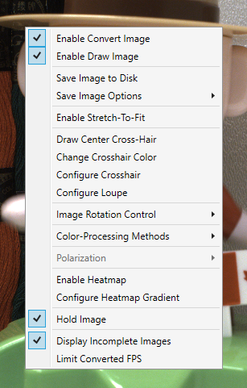
Display Pane Image Context menu
Right click on the Display Pane frame to access a context menu from which you can change the items that appear in the status bar of the display and view image information such as chunk data.
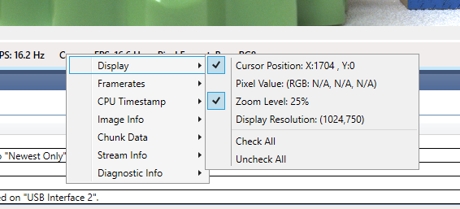
Display Pane Context menu
To open the recording window, click the record icon on the Display pane menu.
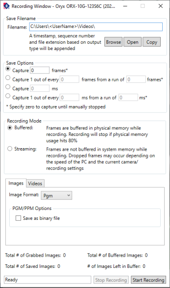
Recording Window
The Log Viewer displays messages, errors, and warnings.
Spinnaker supports five levels of logging:
You can define the logging level that you want to monitor. Levels are inclusive, that is, if you monitor debug level error, you also monitor all logging levels above it.
The Log Viewer menu allows you to export the information, filter, change the display, and search. Spinnaker also saves a log file to: C:\ProgramData\Spinnaker\Logs
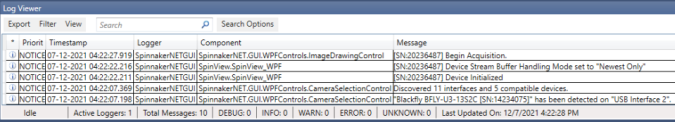
The latest firmware versions often include significant bug fixes and feature enhancements. To determine the changes made in a specific firmware version, consult the Release Notes.
To update your camera's firmware:
Streaming is stopped during firmware update.
NOTE: Do not disconnect the camera from the computer during the firmware update process.